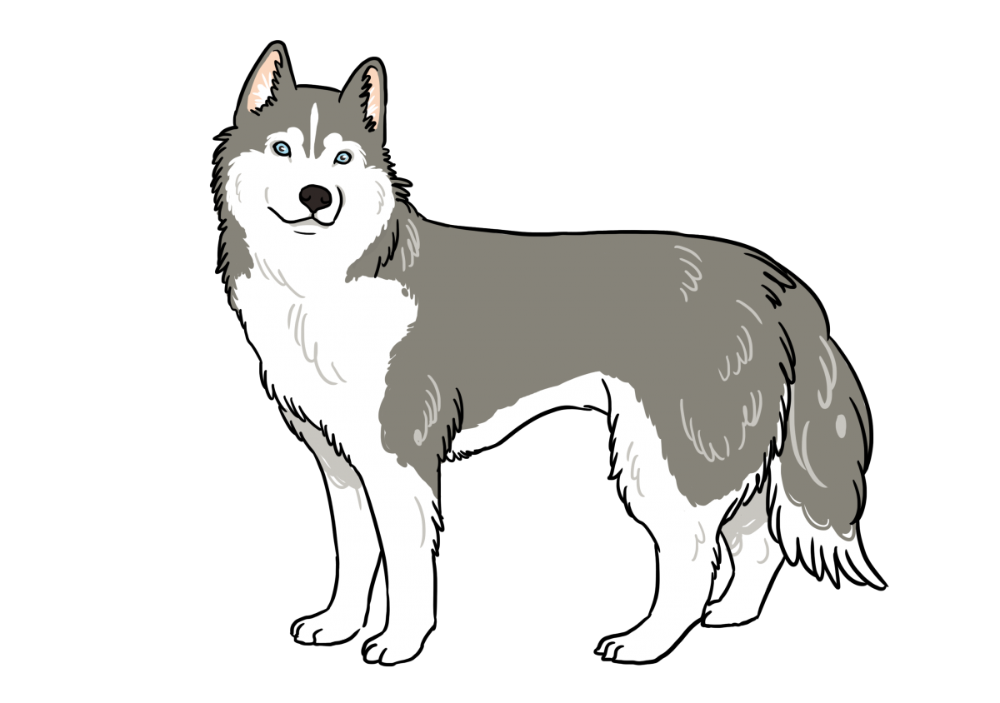
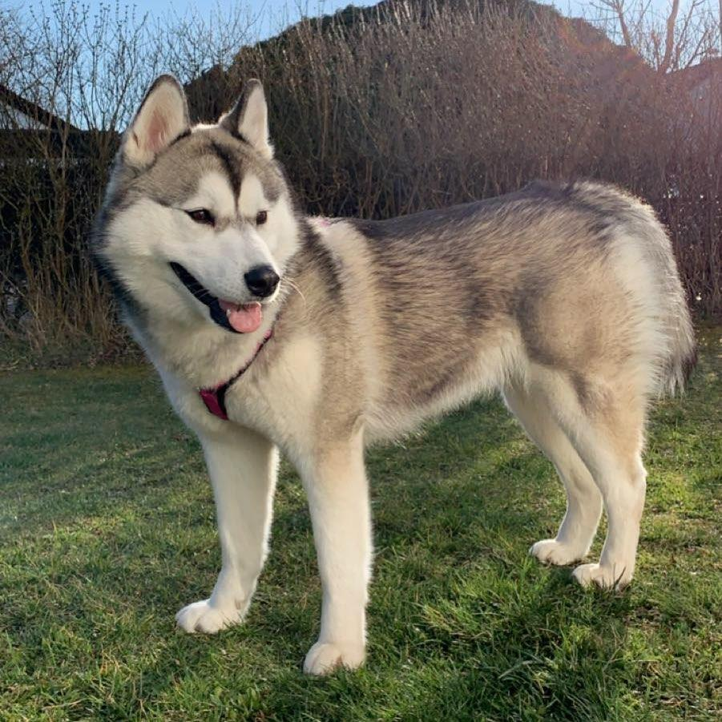
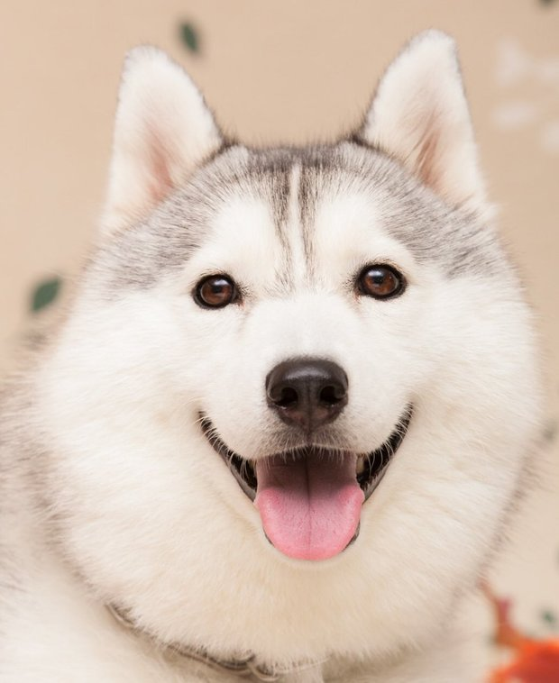
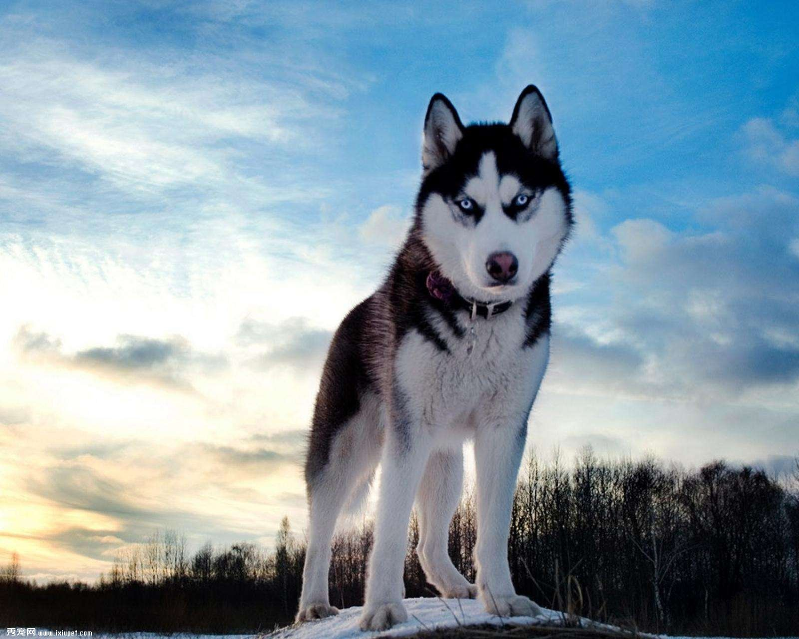

哈士奇

外表
哈士奇精力充沛，行動敏捷。他們通常有厚厚的雙層皮毛，可以是灰色，黑色，銅紅或白色。他們的眼睛通常是淡藍色，但也可能是棕色，綠色，藍色，黃色或異色。
性格
哈士奇在眾多犬種中算是比較好養的，但是哈士奇有點調皮，腸胃不太好，活動量大，有時候嚎叫。哈士奇的典型性格是友好、溫柔、警覺並喜歡交往。哈士奇不會呈現出護衛犬強烈的領地占有欲，不會對陌生人產生過多的懷疑，也不會攻擊其他犬類。成年哈士奇應該具備一定程度的謹慎和威嚴，此犬聰明、溫馴、熱情，是合適的伴侶和忠誠的工作者。
歷史
哈士奇的起源可以從 遠古說起，在那個時候有一群生活在西比利亞的原始人類（楚克奇人）它們為了在西伯利亞雪原地區打獵 所以圈養了一種體型比較小的 西伯利亞狼，經過培育， 這些狼成為了哈士奇的祖先，同時也成為了最適合在這種氣候環境下生存的實用犬種。而且這個犬種的形成也是和它的胃口小基本沒有體味，可以適應日夜溫差幾十度的改變
飼養注意事項
氣溫高、濕度大的台灣氣候讓哈士奇一年換好幾次毛
身為雙層毛犬種，需要勤加理毛、梳毛
精力非常旺盛，需要大量陪伴和關注
容易罹患眼睛疾病，如白內障、青光眼和遺傳性視網膜失調
早期近親交配頻繁，有高機率的遺傳性髖關節疾病


